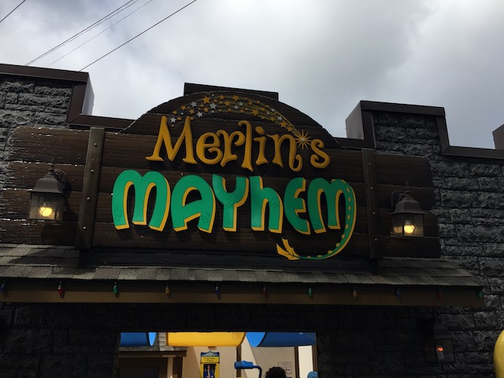

| |
Merlin's Mayhem Review

We're here at Dutch Wonderland to ride Merlin's Mayhem. A Family Inverted Coaster and surprisingly, a unique coaster. Yeah. This may seem like just an ordinary family inverted coaster. But nope. This is the ONLY inverted coaster that S&S has ever done. I guess most people prefer to get theirs from Vekoma. But Dutch Wonderland for some reason, decided to go with S&S. And....they did a pretty good job (S&S really seem to have a track record of designing a type of ride, and then only building it once. Shame as they've made some really cool and unique rides). Seriously, this is unquestionably one of the best family coasters out there. The doors open, we hop in the trains. And here comes the one real downside of this ride. The trains. Not gonna lie. These trains SUCK!!! Very hard plastic and just feel....I guess more pointy. Sorry, but the trains on the Vekoma Family Inverts are MUCH better (Excluding the original Kiddy SLCs with the OTSRs. F*ck those!). Yeah. These trains alone can make me see why parks would rather stick with the Vekoma models. But we're riding and reviewing it. Let's see how it rides. We're off. We climb up the lifthill. And.....no time to look around. For this ride has audio. Not only is it pkaying music, but this ride f*cking talks to you! It tells you that Merlin wants to see you guys fly, and that he's over by the pond. Go get him. You know, it's not too often that a ride gives you an objective. I know there's essentially no theming on this ride. But....doing this is a pretty clever way to get kids invested. OK. We reach the top. Off we go! Dip down, go around a turn, and then BAM!!! Drop down to the ground. Aww. Merlin's Mayhem is trying to imitate Great Bear down the road. How cute. =) We then go through a tight turn low to the ground. Yeah. This ride REALLY reminds me of the large Vekoma Family Inverts. The model that Dragonflier and Orkanen are, with their big drop and tight turn. And just like those, this is a really fun family coaster with a few decent forces by family coaster standards. OK. I didn't see Merlin. But I still am having fun. The ride then goes through a low to the ground S bends. Nothing intense, but this is fairly relaxing. We head through an upward helix. Still having fun. Dip down and pop into a tunnel. TAKE THE TUNNEL!!! And hey. We gained a little more speed! Go through some more low to the ground turns. Hey. There's actually some mild laterals here. This is kind of fun. And BAM!!! Into the station! Yeah. This ride uses its station as a brake run, much like your standard kiddy coaster. Hey. At least the station is themed. It's a really fun family coaster. But honestly, it just feels identical to the big Vekoma model. Only with less comfortable trains. So I would just recommend that instead. But anyways, it's a really fun family coaster that's a great fit for Dutch Wonderland.
6/10
Location: Dutch Wonderland
Opened: 2018
Built by: S&S Power
Last Ridden: June 26, 2021
Merlin's Mayhem Photos



Home
|